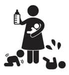

Diyeceğim o ki…
Ben bir köyde büyüdüm. Bebeklerin tavandan sarkan bez salıncaklarda uyumaya bırakıldığı, o salıncağa bağlanan ve kolay sallanmasını sağlayan ince çoraplarla annelerin yattıkları yerden bebeklerini salladığı, kız çocuklarının kulaklarının ucu yakılmış iğneyle delindiği ve kapanmasın diye beyaz bir ip parçasının küpe niyetine takılı bırakıldığı, ablanın, abinin ya da komşunun çocuğunun küçülen kıyafetlerinin saklandığı, o çamaşırların soba borusunun üstüne takılan askılıkta kurutulduğu, diş çıkartan çocukların ağzına kemirsin ama koparamasın diye turşu biberi ya da yeşil soğan verildiği, kreşin olmadığı ama onun yerine babaanne, anneanne, komşu anne gibi gayri resmi kurumların olduğu, çocukların annelerinin koynunda uyuduğu, bebeklerin yemek yemeye başlar başlamaz aile sofrasına oturtulduğu ve herkes ne yiyorsa onu yediği, daldan düşen olgunlaşmış meyvenin suyunu emerek kendi meyve suyunu kendisinin sıktığı, çocukların küvette değil de leğende yıkandığı ve “sular aşağı kızım yukarııııı” diye garip bir temenniyle sudan medet umulduğu, yürümeyi kendi evinin bahçesinde öğrendiği, boy cetvellerin yerini kapıya atılan çentiklerin tuttuğu, bayram akşamları avuçlarımıza kına konduğu, bugün doktorların “uyaran” diye tabir ettiği ve “bir çocuk ne kadar çok uyaran alırsa o kadar iyidir” dedikleri o uyaranların kendi dünyamızın çakıl taşları, tozlu yolları, yıkanmadan yenen meyveleri olduğu, yere düşen bir yiyeceğin üstündeki bakterileri üfleyerek yok edebileceğimize inanacak kadar saf, akşam ezanını duyana kadar sokakta kalacak kadar özgür olduğumuz bir dünyadan bahsediyorum.
Herkesin erkenden evlendiği ve çocuk sahibi olduğu bu dünyada büyümüş olmak aile büyüklerini, daha da büyük aile büyüklerini tanıyabilme fırsatı sundu bana. Bu yüzden anneannemin annesi, dedemin annesi ve babasından hikâyeler ve hikâye gibi yaşanmışlıklar dinleyebilme şansım oldu.
Büyük ninemizin 13 yaşında ilk çocuğunu dünyaya getirdiğini öğrendim örneğin. Küçücük bir çocukken yaşadığı bu travma yetmiyormuş gibi, daha büyüğü ile karşılaşmış ve ilk bebeğini kaybetmiş. Küçüktüm, dedi, bebek öldü dediler. Oturdum bahçede ağladım. Kayınvalidem geldi, yüzüme bir tokat attı, öyle her şeye ağlanmaz, dedi, kalktım işime baktım, bir daha da ömrüm boyunca hiçbir şeye ağlamadım, dedi. Şimdi düşünüyorum, doğru neden ağlasın ki, insan buna da ağlamayacaksa neye, neden ağlasın ki?
Bu kitapta böyle bir hikâyeye yer yoktu elbette. Fakat bakıyorum, bu hikâye 70 yıl öncesine ait.
70 yıl önce çocuk, hayatın içinde bu kadar değersiz görülüyordu. Sonra yavaş yavaş ailenin içinde bir birey olarak yerini aldı. Şu günlerdeyse birey olmanın tadı biraz kaçtı gibi. Pek çok aileyi, anne babalar değil, çocuklar yönetiyor. Öyle aileler var ki, ebeveynler ipleri çocuklarının ellerinde dolaşık duran kuklalar gibi. Onlar ne isterse o oluyor, onlar nereye gitmek isterse oraya gidiliyor, evde ne pişeceğine, televizyonda ne izleneceğine çocuklar karar veriyor.
Bakmayın masum durduklarına, boşluğu gördükleri anda sistemi ele geçirecek kadar sinsiler aslında. Çocuğuma değer vereceğim, ona kendini değerli hissettireceğim, özgüvenli çocuklar yetiştireceğim derken kantarın topuzunu biraz kaçırıyoruz galiba.
Birdenbire üç çocuk sahibi olan eski zaman anneleri gibi hissediyorum bazen kendimi. Sonra o kahraman kadınları düşünüyorum. O kadar imkansızlıklar içinde nasıl bakmışlar o kadar çocuğa, nasıl yetişmişler, hem tarlada çalışıp, hem evin işini yapıp, çamaşır makinesi, bulaşık makinesi ve bilumumun alet edevat yokken nasıl insan yetiştirmişler, düşününce hayretler içerisinde kalıyorum.
Geçenlerde bir arkadaşımla konuştuk, erkek arkadaşı on kardeşin en küçüğüymüş. Dedim ki, sence nasıl bakıp, nasıl yetişti o anne o kadar çocuğa? Senin benim gibi bakmamışlardır, ekmeğin üstüne yağ sürüp göndermiştir sokağa dedi. Durdum düşündüm, dedim ki, iyi de şekerim bir dilim ekmek yağlamak var, on dilim ekmek yağlamak var!
İşte böyle. Bizden bir iki nesil önceki o annelerle bizi kıyaslamaktan kendimi alamıyorum. Çoğu zaman kendi çocukluğumla modern dünya arasında sıkışıp kaldığım anlar oldu. Sonra en doğrusunun içimden ne geliyorsa, en doğru gördüğüm neyse o olacağına kanaat getirdim. Hâlâ çocuklarla ilgili bir sorunla karşılaştığımda uzmanlar ne diyor bir ona bakıyorum, babaannem-anneannem ne diyor bir de onlara danışıyorum, sonra bir de kalbime soruyorum, sen ne dersin diye.
Öyle demeyin, annelerin kalbi konuşur. Benimki konuşuyor ve şimdi şunları söyledi: Söyle o yeni annelere, sakin olsunlar ve tadını kaçırmasınlar. Çocuk yapmanın da bakmanın da...
Şermin Çarkacı
Ankara, Nisan 2014